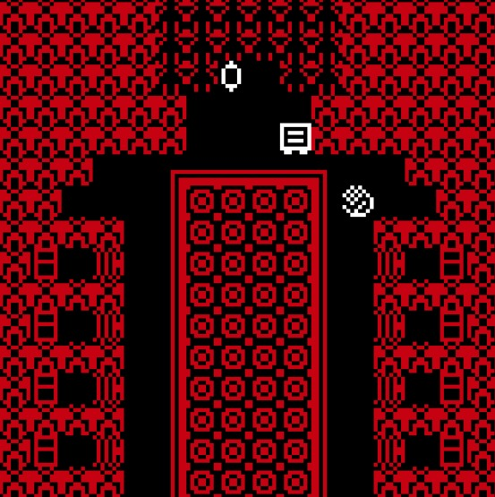
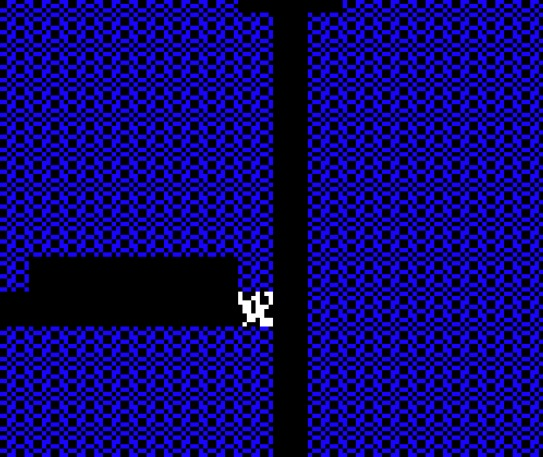
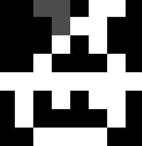

Prisión donde van los criminales más temidos del reino este.

Transposiconador mágico donde se clasifican y se mandan los criminales para Blue Mist

Parece ser un pasadizo oculto para un portal de un solo uso

En las tierras del sur de Magibo las tierras del sur están dominadas por el semi dios de la roca y el magma.

¿Qué habrás hecho para estar acá?

Este es un árbol mágico característico de la isla blue mist. Se mueve al ritmo de la magia del lugar.